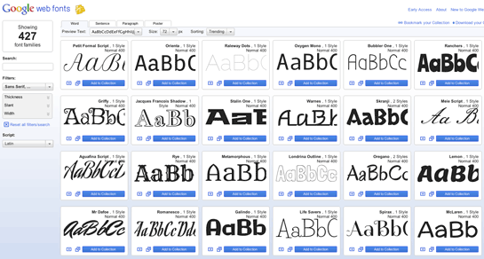

OVI DISEÑO DE SITIOS WEB
GRUPO 301122_81
CSS
CSS, en español «Hojas de estilo en cascada», es un lenguaje de diseño gráfico para definir y crear la presentación de un documento estructurado escrito en un lenguaje de marcado.
1.MAQUETACIÓN BÁSICA
Width: Especifica el ancho que debe tener un elemento.
Height: Especifica el alto que debe tener un elemento.
Margin: Especifica el espacio de separación que toma el elemento respecto a los demás. Se puede especificar por separado arriba, abajo, izquierda y derecha.
Padding: Especifica un margen interno del objeto el cual aumenta su tamaño, este se puede especificar por separado arriba, abajo, izquierda y derecha.

2.TEXTO Y FUENTES
Font-family: Permite especificar el tipo de letra a usar.
Font-size: Permite especificar el tamaño de la letra.
Font-style: Permite elegir el estilo de letra (normal, cursiva, etc).
Text-decoration: Permite dar decoración al texto como subrayado, tachado, línea superior, etc.
Text-align: Permite centrar, justificar, alinear a la izquierda y derecha el texto.
3. COLOR Y FONDO
Color: Permite dar un color al elemento, este color se puede indicar mediante palabras preestablecidas como red, blue, etc., mediante combinación RGB como también por medio de valores de color hexadecimales.
Backgroud-color: Permite definir el color de fondo que tenga un objeto, al igual que color puede ser una palabra, una combinación RGB o un valor hexadecimal.
Backgroud-image: Permite definir una imagen como fondo del elemento.
Background-repeat: Permite determinar cómo se adapta la imagen de fondo con respecto al tamaño del elemento.
box-shadow: Permite dar una sombra al elemento, esta sombra puede ser interna y externa.

4. LISTAS
List-style-image: Permite elegir una imagen como viñeta a una lista.
List-style-type: Permite elegir el tipo de viñeta que usara una lista (circulo, cuadrado, etc.

5. BORDES
border: Añade un borde al elemento.
border-color: Permite definir el color del borde.
border-style: Permite definir el estilo del borde (solido, punteado, etc.
border-radius: Permite redondear las esquinas de un elemento.